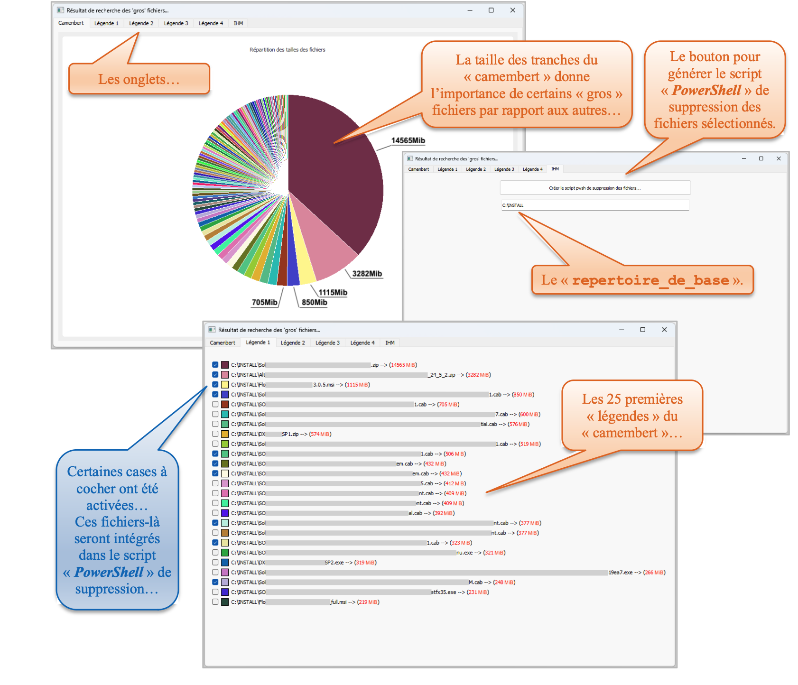

SAÉ 1.05 — Outil de reporting des gros fichiers
Semestre 1 · Python · Analyse de l’espace disque

Développement d’un outil multiplateforme (Windows/Mac/Linux) pour analyser l’espace disque, visualiser les plus gros fichiers et faciliter le nettoyage sécurisé.
Résumé :
Application d’administration facilitant l’identification des fichiers volumineux et la génération de scripts de nettoyage.
Fonctionnalité principale
Analyse récursive de l’arborescence, identification et classement des fichiers par taille, export des résultats et visualisation graphique.
Flux de traitement
- Sélection du répertoire via interface PyQt5
- Analyse récursive et collecte des métadonnées
- Tri et filtrage des fichiers volumineux
- Export JSON et génération de visualisation (camembert)
- Génération optionnelle d’un script PowerShell de nettoyage
Technologies
- Python (pathlib, json)
- PyQt5 / PyQtChart pour l’interface et les graphiques
- PowerShell pour la génération de scripts de suppression
Résultats
Application graphique fonctionnelle permettant d’identifier rapidement les éléments qui consomment le plus d’espace et d’automatiser un nettoyage sécurisé.
Compétences mobilisées
- Programmation Python et conception d’interface
- Traitement de fichiers et gestion multiplateforme
- Visualisation de données et automatisation